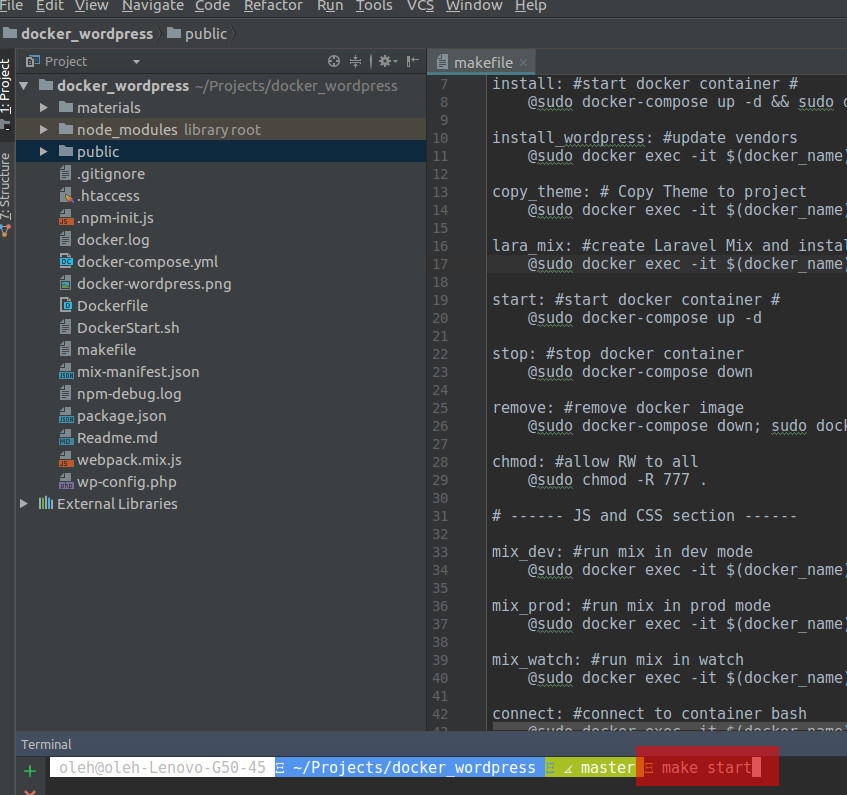
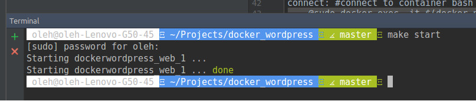
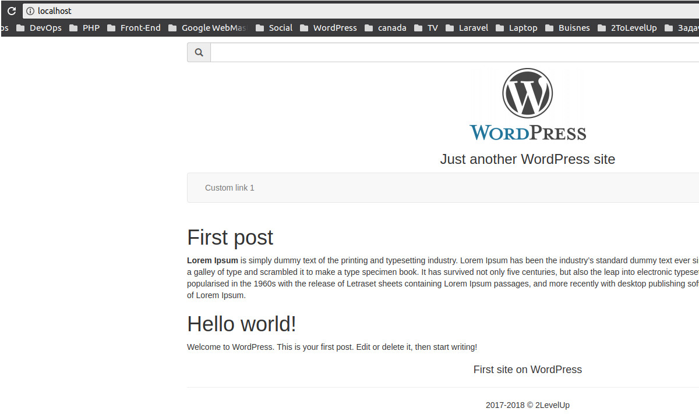
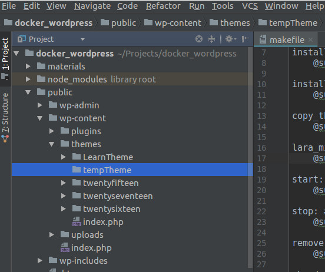
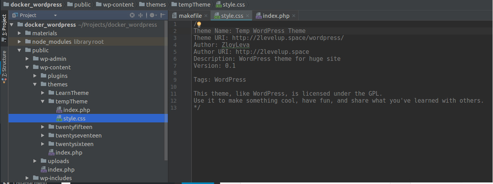
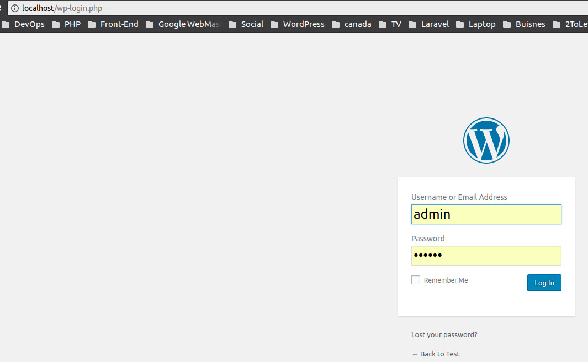
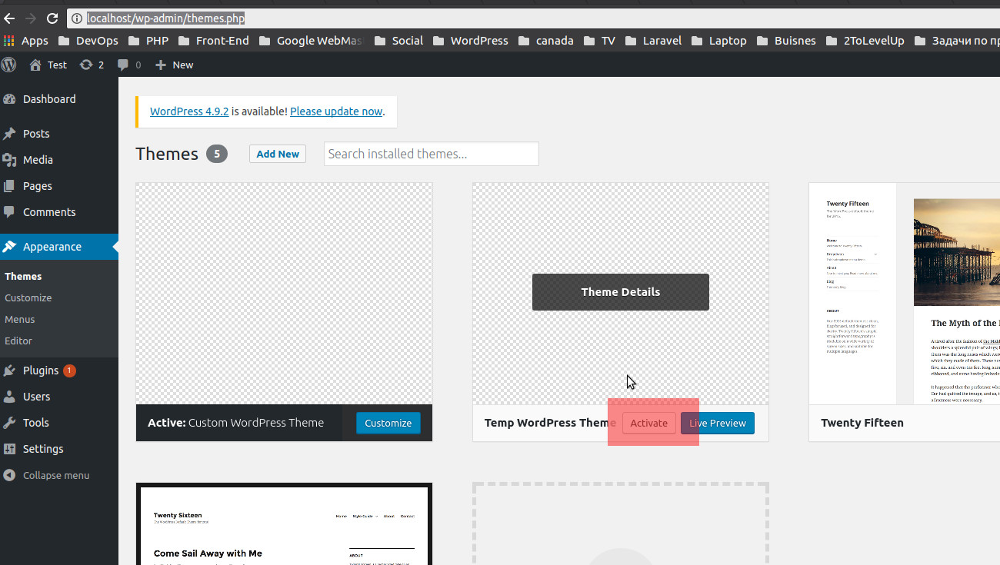
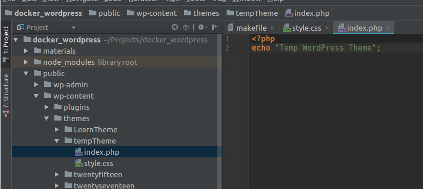
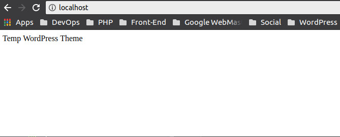

Открываем директорию с проектом и запускаем докер:
make start
... должны увидеть приблизительно такое:
Проверяем в браузере. Набираем в адрессной строке:
localhost/
Или жмем на эту ссылку Создаем кастомную тему для Wordpress.
Для этого в директории /docker_wordpress/public/wp-content/themes/ создаем новую директорию с названием темы, например tempTheme
Создаем два файла style.css - заполняем как на картинке и index.php - пока что оставляем пустым.
Теперь нужно активировать созданную нами тему. Переходим в браузере по ссылке http://localhost/wp-login.php
Или жмем на эту ссылку Дальше переходим во вкладку Внешний вид(Appearance) >> Темы(Themes), выбираем созданную тему(в нашем случае - Temp WordPress Theme) и жмем Активировать!
Создаем тестовый контент в index.php.
Сохраняем и открываем в браузере localhost/
